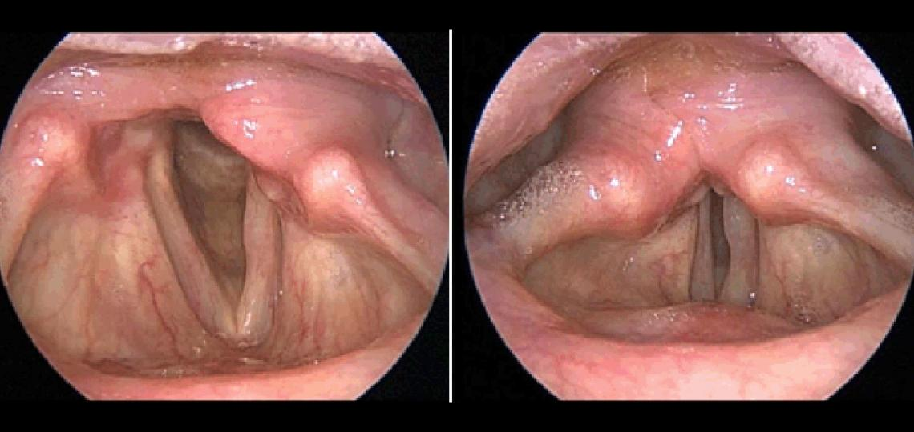

Vocal cord paralysis

CAUSES
Vocal cord paralysis can result from several conditions, diseases, injuries and infections, including.
- Autoimmune diseases such as myasthenia gravis (MG).
-
Cancer, such as lung cancer and thyroid cancer.
Connective tissue disorders like Marfan syndrome.
Infections like Lyme disease.
-
Injuries and other trauma to the neck, head and chest.
Neurological conditions, including multiple sclerosis (MS), Parkinson’s disease and damage from a stroke.
-
Poisonous substances such as lead and mercury.
Surgery, including heart surgery, thyroidectomy (thyroid gland removal) and mechanical ventilation (breathing tube).
-
Tumors, including cancerous (malignant) tumors and noncancerous (benign) tumors. They can push on the nerves and cause damage.
SYMPTOMS
Vocal cord paralysis symptoms range from mild to severe. Sometimes symptoms go away without treatment, or they may be long-lasting. They can also get worse over time. Symptoms include:
- Changes in the voice: Your voice may sound hoarse, scratchy, weak or “breathy.” When you speak, you may hear a gurgling sound or air escaping. The tone of the voice might sound different, too. It may be higher or lower than before. You may run out of air easily as you try to speak.
-
Difficulty swallowing: You may choke when you try to swallow, and food or liquid may get stuck in your throat. Coughing might not bring up the food or liquid, and you might feel like you always have mucus in your throat. Providers call these swallowing problems dysphagia. Sometimes, food or saliva may enter your windpipe, which can cause choking or pneumonia.
-
Trouble breathing: You may hear a wheezing or raspy sound when you breathe. It may be hard for you to take a full breath. Shortness of breath (dyspnea) can happen following activity, exercise or after talking for a while. Breathing problems don’t usually happen when only one vocal cord is paralyzed.
DIAGNOSIS
Your provider will ask about your symptoms and health history to determine what’s causing the paralysis. They may order a blood test to look for autoimmune disorders. To confirm a diagnosis, your provider may order:
- Imaging studies: An MRI or CT scan shows detailed images of your brain, throat, vocal cords, voice box, thyroid gland and chest. Your provider may also order an X-ray of the esophagus.
-
Laryngoscopy: Your provider will insert a long, thin tube into your nose to examine your throat. The flexible tube has a camera on the end. Images from the camera appear on a monitor. Your provider will then look at images of your voice box and vocal cords.
-
Laryngeal electromyography (LEMG): This test measures how your nerves control the muscles in your voice box. It evaluates and records the electrical impulses of the muscles.
TREATMENTS
To keep your vocal cord in place and close the space between your vocal cords, they may:
- Inject a filler (vocal cord injection): Your provider may inject a filler material through a needle. There are several types of filler material. The filler closes the gap between your vocal cords.
Insert a voicebox implant (laryngeal framework surgery): Your provider places an implant into your voice box. Most commonly, the implant is silicone. It holds the paralyzed vocal cord in place and helps both of the vocal cords close. This procedure requires a small incision (cut) in the neck. This is most commonly performed in adults or older children.
-
Nerve surgery (reinnervation): Your provider takes a nerve that connects to other muscles in your neck and re-attaches it to the nerve that moves your vocal cords. This does not cause any problems with the other muscles in your neck. It is most helpful in children.
-
If both vocal cords are paralyzed, you may need a tracheostomy. During this procedure, your provider makes an incision and inserts a tube into your throat. The tube opens the airway and helps you breathe. To help you breathe long-term, your provider may recommend a tube-free tracheostomy. In some cases, your provider may remove a portion of one or both vocal cords with a laser to widen the airway.